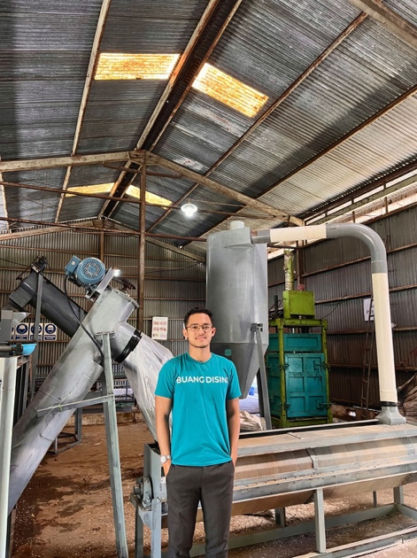
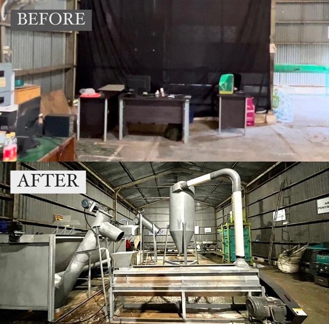
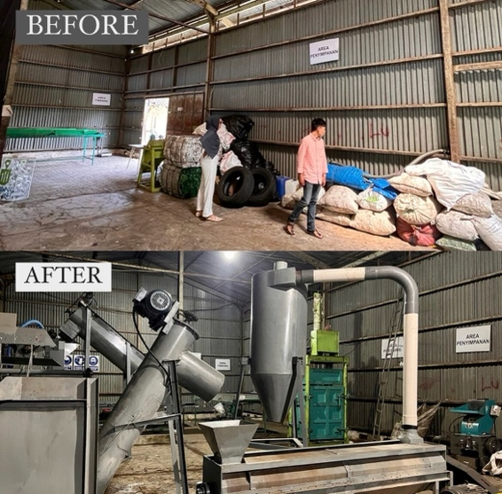
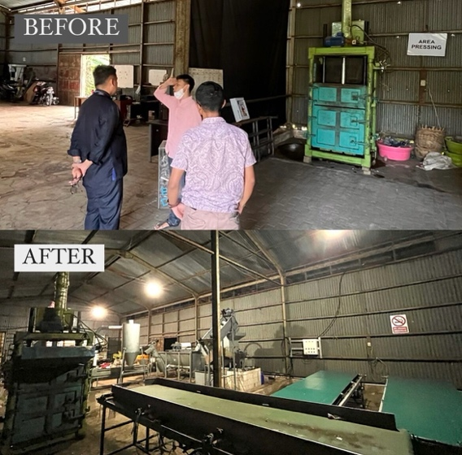

2023 started with turbulence, wild and unpredictable just like a rollercoaster ride. Exhausted and overwhelmed is an understatement, especially for the last two months — but the struggle has finally seen a light.

I am thrilled to announce that I have just completed the construction of the Smart Waste Center — a plastic recycling manufacturing facility for Buangdisini waste management startup. It’s still far from perfection, but it’s been an incredible journey that started from scratch.

It has taken me about six months to plan, execute, evaluate, analyse, improve, and re-construct. As I stand in front of the new facility, I can’t help but feel a sense of pride in what we’ve accomplished. This project has been a testament to perseverance, creativity, and our vision for a sustainable future.
This has been more than just building a facility. It’s been about creating a solution to a problem that affects us all. I’m passionate about making a positive impact on the world, and I believe this facility will help achieve that goal.

Throughout this journey, I’ve invested a tremendous amount of effort into the project. It’s been about creating a solution to a problem that affects us all. By implementing circular economy principles, Buangdisini is not only helping to reduce plastic waste, but also contributing to a more sustainable future.
This is something that I am very passionate about, and I hope that this facility can serve as an example for others to follow.

So, which city would be the best location for us to expand and establish new recycling hub facilities? Wait for us in your city!